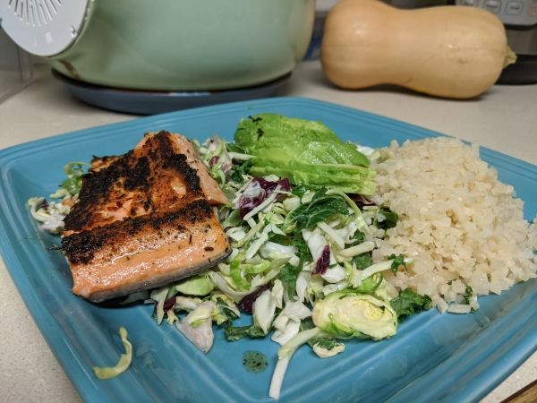

Blackened Salmon, Cauliflower Rice and a Cruciferous and Avocado Salad
This is a recipe that can be made super fast! But still creates the feel of a fancy dinner. Its fast because you can buy the ingredients almost already prepped for you at stores (like Trader Joe's)
Ingredients:
- salmon fillet
- avocado
- cauliflower rice
- garlic
- oil
- mixed salad veggies (like brussel sprouts, cabbages, kale or other greens)
- Preheat a skillet with garlic and oil to medium to medium-high.
- Drop the salmon fillet skin-side up on the skillet and place a lid on top.
- Microwave some cauliflower rice with a sprinkle of water for around 3-4 minutes.
- While salmon is still cooking, open a bag of mixed cruciferous (brussel sprouts, cabbages, and kale) and toss with your favorite dressing.
- Check your salmon (should be done in about 7-10 minutes.)
- Chop up your avocado and dress your salad.
- Enjoy your fancy meal made in under 15 minutes!